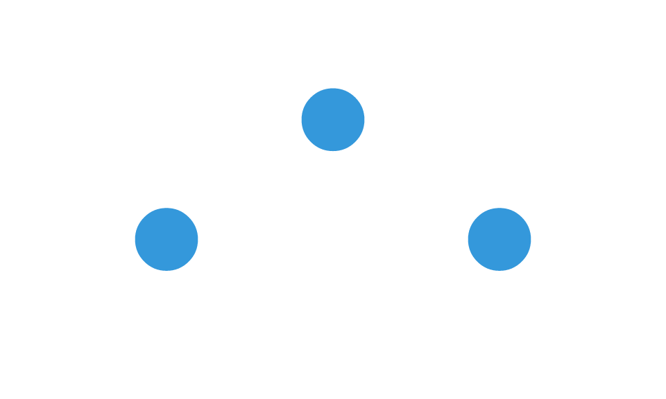

The scene contract: what vellumplot and vellumwidget depend on
Source:vignettes/scene-contract.Rmd
scene-contract.Rmdvellum is the backend for a small ecosystem: vellumplot compiles a
grammar of graphics into a vellum scene, and vellumwidget turns a
rendered scene into an interactive HTML widget. Both bind to a narrow
seam: scene_model(), scene_svg(), and the
per-element metadata that rides on grobs. Because the three packages are
version-locked and co-released, a change to that seam can break the
layers above it silently.
This article is the authoritative description of that
seam. If you are building on vellum, or changing vellum’s
output, this is the contract to hold to. (It supersedes the internal
design note _docs/DESIGN-INTERACTIVITY.md, which is kept
only as history.)
The seam, in one picture
vellumplot ──compiles a plot to grobs carrying──▶ key / meta / id / role
│
vellum ──renders──▶ scene_svg() (data-key, data-vellum-*, role attrs)
scene_model() (per-element table: identity + bbox)
│
vellumwidget ──reads scene_svg() + scene_model()──▶ hover / select / brush / linkEverything below the grammar is pure metadata: a static
PNG/SVG render never calls scene_model(), and a grob
without a key/meta still draws exactly as
before. Nothing here changes what is painted.
Carrying identity on a grob
The batched mark constructors (points_grob(),
circle_grob(), rect_grob(),
segments_grob(), hexagon_grob(),
sector_grob()) take two optional per-element arguments:
-
key: a character vector of data keys, one per element (recycled). This is the join key a host uses to tie an on-screen element back to a datum. -
meta: a list of free-form per-element records (recycled), e.g. a tooltip string or field values.
Every grob also takes id and role (a single
value per grob) for semantic identity and accessibility.
s <- vl_scene(5, 3, bg = "white") |>
draw(points_grob(
x = c(0.25, 0.5, 0.75),
y = c(0.4, 0.7, 0.4),
size = vl_unit(6, "mm"),
gp = vl_gpar(fill = "#3498db", col = NA),
key = c("a", "b", "c"),
meta = list(
list(tooltip = "first"),
list(tooltip = "second"),
list(tooltip = "third")
)
))
s
(Each batched grob carries one graphical style; the grammar layer
above vellum emits one grob per style bucket, so a scatter with three
colours is three points_grob()s. The
key/meta machinery is per element
regardless.)
scene_model(): the per-element table
scene_model() walks the rendered scene and returns a
list of two data frames.
m <- scene_model(s)
names(m)
#> [1] "elements" "panels"
elements
One row per drawn element of the keyable marks, in paint order:
str(m$elements)
#> 'data.frame': 3 obs. of 14 variables:
#> $ key : chr "a" "b" "c"
#> $ mark : chr "point" "point" "point"
#> $ id : chr NA NA NA
#> $ name : chr NA NA NA
#> $ panel: chr NA NA NA
#> $ x0 : num 97.3 217.3 337.3
#> $ y0 : num 150.1 63.7 150.1
#> $ x1 : num 143 263 383
#> $ y1 : num 195 109 195
#> $ x : num 120 240 360
#> $ y : num 172.8 86.4 172.8
#> $ w : num 45.4 45.4 45.4
#> $ h : num 45.4 45.4 45.4
#> $ meta :List of 3
#> ..$ :List of 1
#> .. ..$ tooltip: chr "first"
#> ..$ :List of 1
#> .. ..$ tooltip: chr "second"
#> ..$ :List of 1
#> .. ..$ tooltip: chr "third"The columns are the contract:
| column | type | meaning |
|---|---|---|
key |
character | the data key (NA if the element was drawn without
one) |
mark |
character | the mark kind (see vocabulary below) |
id |
character | the grob id (NA if unset) |
name |
character | the grob name (NA if unset) |
panel |
character | the enclosing named panel (NA if none) |
x0, y0, x1, y1 |
numeric | device-pixel bounding box |
x, y |
numeric | element centre, (x0+x1)/2, (y0+y1)/2
|
w, h |
numeric | element size, x1-x0, y1-y0
|
meta |
list | the free-form per-element record (list-column) |
The mark vocabulary is a closed set: rect,
point, circle, hexagon,
sector, segment, path,
line, polygon.
Two families produce these rows:
-
Batched marks (
rect,point,circle,hexagon,sector,segment) emit one row per element, always, even when unkeyed (thenkeyisNA). -
Single-shape marks (
path,line,polygon) emit one row per grob, and only when keyed. An unkeyed path/line/polygon is geometry-only and does not appear in the table. (A singlesffeature, one polygon or linestring, is exactly one such element.) These constructors do not take akeyargument; the grammar keys them by setting the grob’skeysslot, which is how a single sf feature becomes addressable.
panels
One row per named panel (a named viewport becomes an addressable panel):
str(m$panels)
#> 'data.frame': 0 obs. of 14 variables:
#> $ name : chr
#> $ x0 : num
#> $ y0 : num
#> $ x1 : num
#> $ y1 : num
#> $ px0 : num
#> $ py0 : num
#> $ px1 : num
#> $ py1 : num
#> $ xscale_lo: num
#> $ xscale_hi: num
#> $ yscale_lo: num
#> $ yscale_hi: num
#> $ meta : list()Columns:
| column | type | meaning |
|---|---|---|
name |
character | the panel’s viewport name |
x0, y0, x1, y1 |
numeric | bounding box of the panel’s elements (device px) |
px0, py0, px1, py1 |
numeric | the panel viewport’s resolved device-px rectangle —
the true data region, from the layout solve, not just where marks landed
(NA if the viewport was not captured) |
xscale_lo, xscale_hi |
numeric | the panel viewport’s native x coordinate range (its
xscale) |
yscale_lo, yscale_hi |
numeric | native y coordinate range (its yscale) |
meta |
list | the panel viewport’s free-form meta (list-column;
NULL when none) |
The pixel rectangle paired with the native range gives the affine
that maps device px ↔︎ native for that panel — the geometry a host needs
to invert a pixel back to a data coordinate. It is the panel-level
analogue of an element’s bbox + meta.
The panel-level meta (the meta = argument
of [vl_viewport()]) is the same opaque, host-read channel as element
meta: vellum carries it untouched and names no conventions.
The grammar uses it for panel-scoped descriptors — e.g. the
scales descriptor vellumplot attaches to each
data panel (per-axis type, domain, breaks, and labels), which
vellumwidget reads to map pixels back to data values. That
convention is documented by vellumplot, not here.
The meta key vocabulary
vellum treats meta as opaque: it is a free-form list,
recycled to the element count and carried through untouched; vellum does
not name or validate its keys. The following key names
are conventions the grammar (vellumplot) writes and the
widget (vellumwidget) reads. Documenting them here keeps the three
layers in step; they are not enforced by vellum.
meta key |
written by | read by | purpose |
|---|---|---|---|
tooltip |
vellumplot tooltip=
|
vellumwidget | hover tooltip text (falls back to key) |
data_id |
vellumplot data_id=
|
(becomes the key) |
the data key for an element |
hover_group |
vellumplot hover_group=
|
vellumwidget | co-highlight a group on hover |
hover_color |
vellumplot mark aesthetic | vellumwidget | per-element hover outline colour |
selected_color |
vellumplot mark aesthetic | vellumwidget | per-element selection colour |
legend |
vellumplot legend keying | vellumwidget | the series a mark belongs to |
legend_for |
vellumplot legend keying | vellumwidget | the series a legend swatch drives
("<aes>:<level>") |
If you add a convention, add it here.
scene_svg(): the emitted attributes
scene_svg() returns the same scene as an SVG string.
Interactivity rides on SVG attributes; the raster and PDF backends
ignore all of them.
svg <- scene_svg(s)
# the data-key attributes on the three points:
regmatches(svg, gregexpr('data-key="[^"]*"', svg))[[1]]
#> [1] "data-key=\"a\"" "data-key=\"b\"" "data-key=\"c\""Four attribute mechanisms, each emitted only when its source is set:
| attribute | source | scope | set from |
|---|---|---|---|
data-key |
grob key
|
per element |
points_grob(key=) etc. |
data-vellum-id |
grob id
|
per grob/node | *_grob(id=) |
data-vellum-name |
grob name
|
per grob/node | *_grob(name=) |
role |
grob role
|
per grob/node | *_grob(role=) |
data-vellum-panel |
named viewport | wrapping <g>
|
vl_viewport(name=) |
data-vellum-pan |
pannable panel’s inner group | inner <g>
|
vl_viewport(pannable=) |
An empty/NULL source emits no
attribute, so a scene that declares no interactivity is
byte-for-byte identical to one built before any of this existed.
Pannable panels
A named viewport marked vl_viewport(pannable = TRUE) is
emitted as two nested groups instead of one: an outer
<g data-vellum-panel="name"> that carries the panel’s
clip (untransformed, so the clip region stays fixed) around an inner
<g data-vellum-pan="name"> holding the content. The
panel’s clip is hoisted once to the outer group (rather
than repeated per element), so a host can set a transform
on the inner group to pan/zoom the marks while the clip — and the
axes/legend outside the panel — stay put. This is the structural basis
for host-side axis-aware zoom. It is SVG-only and inert for static
rendering (the extra group has no transform until a host sets one);
non-pannable panels and other backends are unchanged.
Accessibility
A scene carries an optional accessible name and
description, set with
vl_scene(title=, desc=) or
describe(scene, title=, desc=). When present:
- the SVG root becomes
<svg role="img" aria-labelledby="…">with<title>and<desc>children (the reliable screen-reader pattern; WCAG 1.1.1); - the PDF is a tagged PDF: the chart
is a
Figurein the structure tree whoseAltis the description.
This is additive: with no title/desc the output is unchanged. The
grammar layer (vellumplot) sets these automatically from
the plot’s title and an auto-generated (or labs(alt=)) alt
text. See vellumplot’s Accessibility
article. Per-element role (above) is a genuine ARIA
role; the interactive widget layer (vellumwidget) adds
keyboard navigation and live-region announcements on top.
Invariants the contract guarantees
These are the properties vellumplot and vellumwidget are entitled to
rely on, and that vellum’s own tests
(tests/testthat/test-contract.R) pin down:
-
Paint order.
scene_model()$elementsis in draw order, and the SVG emits elements in the same order. A host can zip the SVG DOM and the table positionally. -
Semantic/geometry agreement.
scene_model()builds the identity columns from the R grob tree and the geometry columns from the compiled backend, then asserts they enumerate the same elements: the element counts must match and thekeycolumn must be identical at every position. A mismatch is a hard error (a compiler bug), never a silent mis-join. -
Additivity.
key/meta/id/rolenever change what is drawn. A render with no keys is identical to the same scene without the machinery, on every backend. -
Stable
idjoin key. A grob’sidsurfaces asdata-vellum-idin the SVG and is the join key vellumplot records in its provenance table, so a widget can map an SVG node to the grammar record that produced it.
For contributors
If you change any of the following, update this article and the contract tests in the same commit, and expect to co-release vellumplot and vellumwidget:
- the
elements/panelscolumn set or types, - the
markvocabulary, - which marks are keyable, or the batched-vs-single-shape rule,
- the SVG attribute names, or when they are emitted,
- the reserved
metakey vocabulary. ```